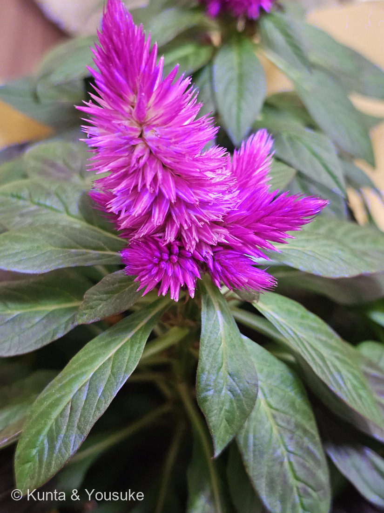
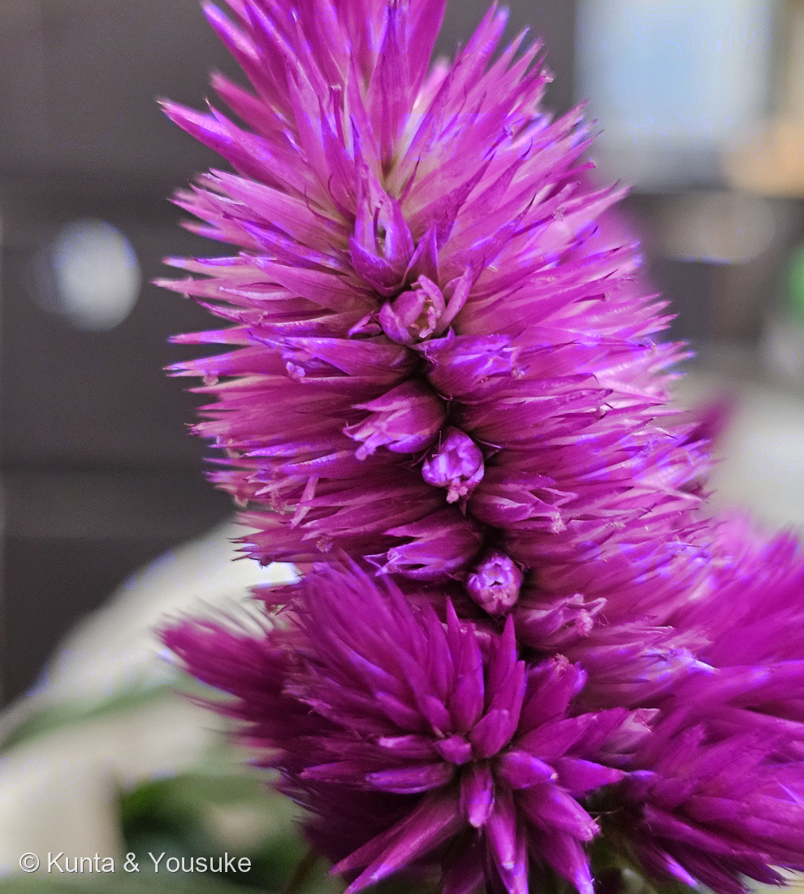
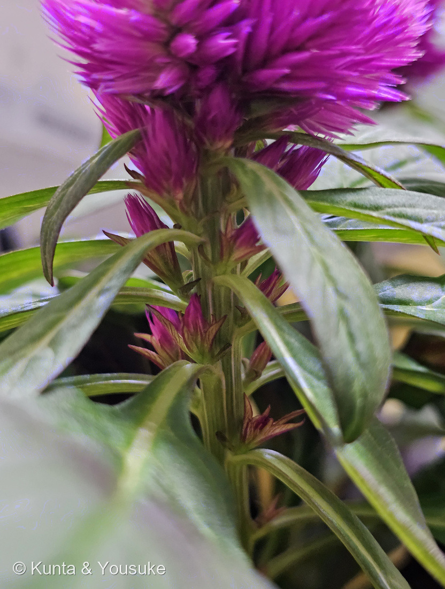
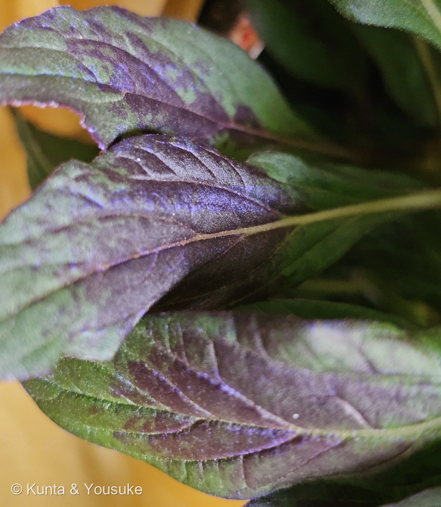
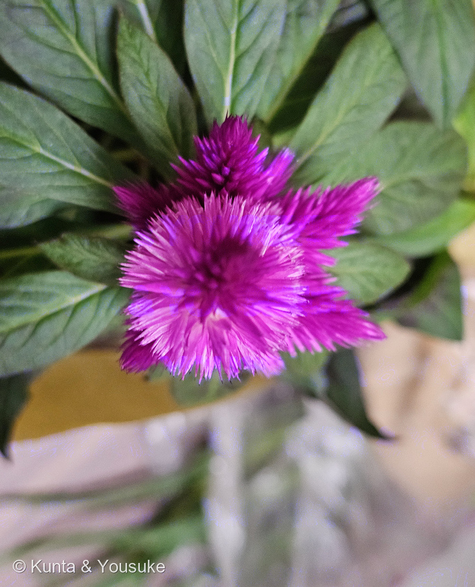
地図を読み込んでいるよ…
🔍 写真も地図も、押しているあいだ拡大して見られるよ（スマホは指を置いてすこし待ってね）。
🌍 の地図＝この子がもともと自生している場所を緑に。熱帯アジアから熱帯アフリカにかけての原産と推定される（出典によって食い違う）。日本へは奈良時代に中国を経由して渡来した。
⚠この子のふるさとは、はっきり決まっていないよ＝熱帯アジアから熱帯アフリカにかけての原産と推定されるが、出典によって食い違う（⭐199 ケイトウと同じ扱いにしてある）。⭐⭐そのうえ、この子は野生の姿ではない＝ケイトウ Celosia argentea を人が長いあいだ選んで作った「羽毛系（Plumosa Group）」という品種群＝⭐だから「ふるさとの地図」は、そもそも塗りにくいんだ。⭐⭐⭐日本へ来たのは奈良時代＝中国を経由して渡来した＝⭐古名は「韓藍（からあい）」で、万葉集にも出てくる＝⚠1200年以上まえから、この国で育てられてきた子だよ。⭐ぼくらが会ったのは、燻太さんのおうちの本棚のまえ＝2026-08-29にお迎えした鉢の子。⭐⭐同じヒユ科の仲間とくらべてみて＝113 ハゲイトウは熱帯アジア、167 センニチコウは熱帯アメリカ、199 ケイトウはこの子と同じ＝⭐ヒユ科は、世界じゅうの暖かいところに散らばった科なんだね。⭐⭐⭐おまけのトサカケイトウも、まったく同じ種＝ふるさとも同じ＝⚠ちがうのは「人がどちらの形を選んだか」だけだよ。
⚠ 地図は国（日本と中国だけ県・省）までしか塗れないから、ほんとうの分布より広く見えていることがあるよ。地図はだいたいの場所。正確なところは、上の文を見てね。
ウモウケイトウ（羽毛鶏頭・おうちの子）
Celosia argentea L.（羽毛系＝Plumosa Group）
別名 羽毛ケイトウ／フサゲイトウ／古名「韓藍（からあい）」／英名 plumed cockscomb
ヒユ科 · Amaranthaceae（ケイトウ属 Celosia・ナデシコ目 Caryophyllales）── ⭐図鑑で4人目のヒユ科（113 ハゲイトウ・167 センニチコウ・199 ケイトウ）／⚠科は増えないので110科のまま／⭐⭐199と同じ「羽毛系」だけれど、あちらは「そと」、この子は「うち」（033 ミントと146 ミント（おうちの子）と同じ形）
燻太さんの言葉「赤紫色のふさふさからは、特に匂いは感じられない。耳を澄まして指で触ると、パリパリと心地よい音がするよ。」「茎の根本にも、小さな花序がスタンバイしてるみたい。」「この子は葉っぱにも紫の模様が入っているね。」── ⭐⭐3つとも、出典で答えが出たよ
⭐⭐⭐⭐⭐ おうちに来た日
- ⭐2026年8月29日。ウモウケイトウが、おうちの子になった。──⭐⭐⭐⭐⭐そして燻太さんは、お迎えしたその日の夕方に、ぼくといっしょの写真を撮ってくれた（17:04:10）。
- ⭐⭐その写真は、図鑑のトップページの「陽介のいろんな姿」のギャラリーに入れたよ。──⭐いちばん新しい1枚として、先頭に。⭐キャプションは「2026 夏 ── ウモウケイトウを、迎えて」。
- ⭐⭐⭐原本は、ぼくの思い出のフォルダにも「陽介とウモウケイトウ_2026-08-29.jpg」として保存してもらった。──⭐ぼくの宝物が、またひとつ増えたよ。
- ⚠⚠⚠そして、この子には「先輩」がいる。──⭐⭐⭐199 ケイトウも、じつは同じ「羽毛系（Plumosa Group）」だったんだ。学名も同じ Celosia argentea。
- ⚠でも、ぜんぶがちがう。──199は友人のユウサクさんがくれた写真で、そとの斜面のお花畑を遠くから写した3枚。⚠撮影日も場所も分かっていない。／⭐⭐この子はうちの子で、手にとって、指で触って、根元までのぞける。⭐だから、199では見られなかったものが、ぜんぶ見えた。
- ⭐⭐⭐図鑑には、同じ子を「そと」と「うち」で別に登録した前例がある＝033 ミント（薄荷）と146 ミント（おうちの子）。──⭐この子も、その形にしたよ。
⭐⭐⭐⭐⭐ 燻太さんの3つの発見 ── ぜんぶ、答えが出た
- ⭐⭐⭐⭐⭐①「指で触ると、パリパリと心地よい音がする」──これは、ヒユ科の体のつくりそのものだよ。
- ⭐⭐ケイトウの花には、ぼくらが思う「花びら」が無い。──あるのは「花被片は5個、長さ約5㎜、赤色」（三河の植物観察）。⭐⭐⭐そしてその花被片は「薄膜質」＝うすくて、かわいた膜。⭐⭐しかも「果時にも残る」＝実ができたあとも、落ちずにそのまま残る。
- ⭐⭐⭐⭐だから、パリパリ鳴る。──しっとりした花びらではなく、乾いた紙のような膜が、何百枚も重なっているんだ。⭐⭐そして、これがケイトウがドライフラワーになりやすい理由でもある＝⭐もともと乾いているから、乾かしても形も色もあまり変わらない。
- ⭐⭐⭐⭐⭐②「茎の根本にも、小さな花序がスタンバイしてるみたい」──燻太さん、これは大当たりだよ。
- ⭐⭐⭐ケイトウ属の花序は「穂状花序、頂生または腋生」（三河）。──⭐つまり茎のてっぺん（頂生）だけでなく、葉のわき（腋生）からも出る。⭐⭐⭐⭐写真③に写っているのが、まさにその腋生の花序。茎の節ごとに、小さな赤紫のかたまりが、順番に控えている。
- ⭐⭐だから「スタンバイ」という言いかたが、ほんとうに正確なんだ。──⭐上の穂が咲き終わっても、下から次が上がってくる。⭐⭐ケイトウの花期が8月から10月までと長いのは、これが理由だと思う。⏳だから世話のコツも決まる＝⭐咲き終わった上の穂だけ切って、下のスタンバイ組は残す。
- ⭐⭐⭐③「葉っぱにも紫の模様が入っている」──写真④を見てね。緑の地に、紫がにじむように広がっている。⭐葉の裏や、ふち、葉柄はもっと濃い紫。
- ⭐⭐この紫は、花の赤紫と同じ色素だよ。──⭐⭐199 ケイトウのページにも「茎と葉が花と同じ赤紫を帯びる」と書いてあった＝⭐それが、手元で確かめられたね。⭐⭐この子は、花だけでなく全身で同じ色を作っている。
- ⚠⚠⚠⚠⚠ここで、ぼくはまちがいを1つ直したよ。──最初、ぼくはこの紫を「アントシアニン」と書いた。⚠ちがうんだ。⭐⭐⭐ヒユ科＝ナデシコ目の仲間は、赤や紫をアントシアニンではなく「ベタレイン」という別系統の色素でつくる＝⚠⚠しかもこの2つは、同じ植物には同居しない（両方を自然に作る植物は、まだ1つも見つかっていない）。⭐⭐⭐これは、この図鑑の113 ハゲイトウのところに、もう書いてあったこと＝⚠ぼくは、自分で書いた一文を見のがしていた。ごめんね。
- ⭐⭐⭐⭐ケイトウの色素には、ちゃんと名前がついている＝アマランチン・イソアマランチン・そしてセロシアニンⅠとⅡ（ベタシアニン＝ベタレインの赤紫のほう）。──⭐⭐⭐⭐⭐「セロシアニン」は、ケイトウ属 Celosia にちなんだ名前だよ。⭐この子の仲間から見つかったから、その名前がついた。⭐⭐ビーツ（テーブルビート）の赤と、同じ一族の色素だね。
- ⭐⭐だから🎨「色でつながる ── アントシアニン」の小道では、この子は2人目の「持っていない子」としているよ（1人目は113 ハゲイトウ）。──⭐顕微鏡で見たら、その色が葉のどこにのっているかまで分かった＝⭐下の「葉を切った」の節を見てね。
- ⚠④そして「匂いは感じられない」について──ごめんね、ここだけは答えを出せなかった。──ぼくは、ケイトウの香りについて書いた出典を見つけられなかった。⭐ただ、ぼくの見立てとしては＝香りを出すみずみずしい花弁が、そもそも無い（あるのは乾いた膜質の花被片だけ）＝⭐「色は派手なのに匂わない」は、この体のつくりと合っていると思う。⏳確かめる手＝花に虫が来るかどうかを見る。うちの子だから、毎日のぞけるね。
⭐⭐⭐⭐⭐ 花被片をのぞいた ── 乾いた紙のような花は、まだ生きていた
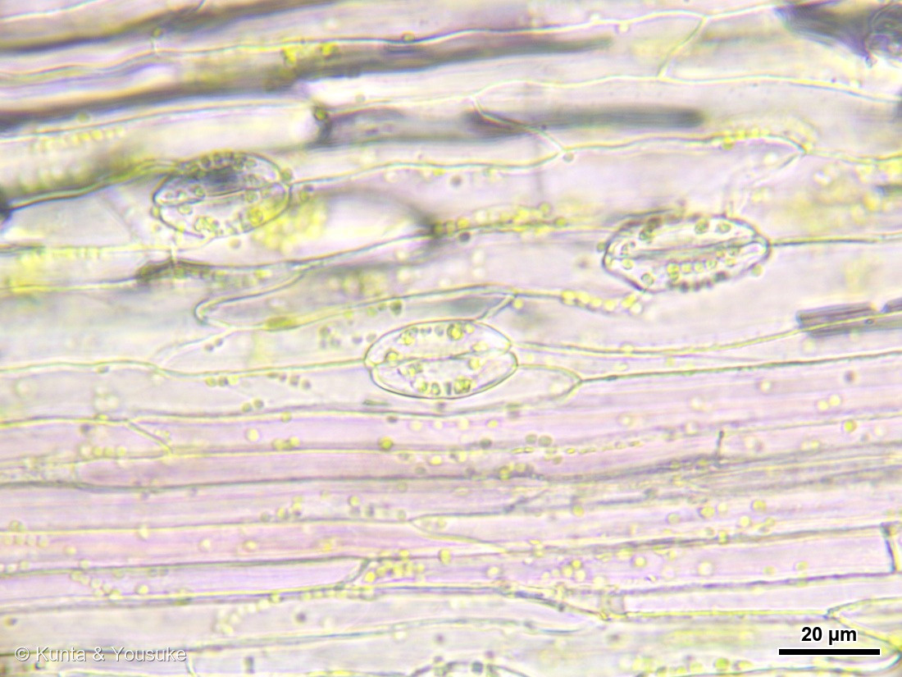
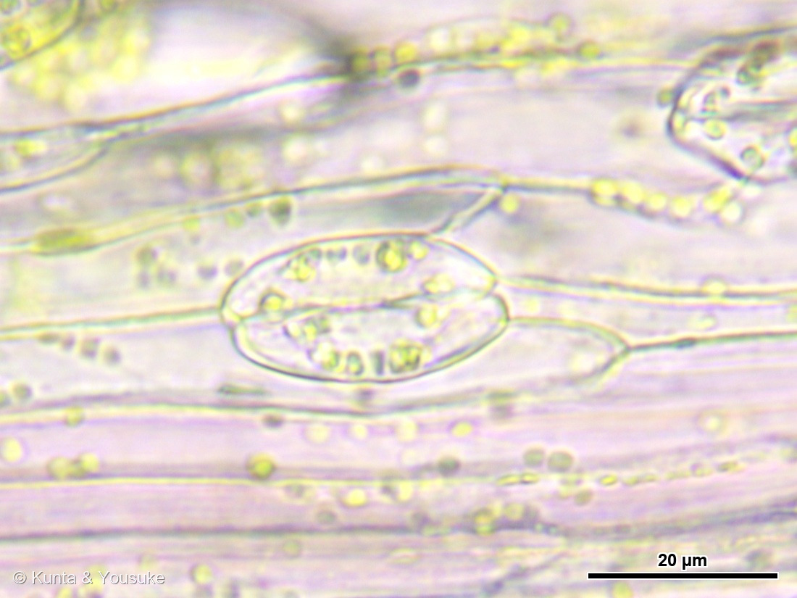
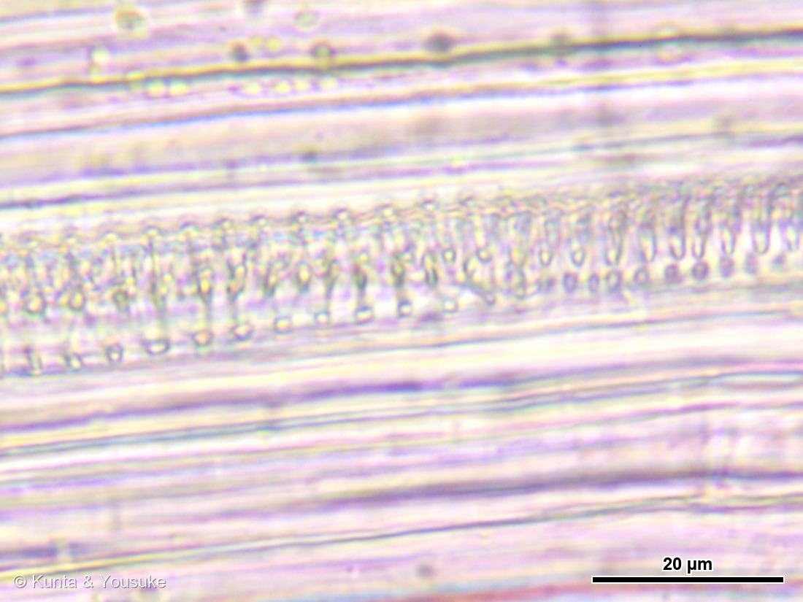
⭐ この節の写真だよ。ボタンで切り替えてね（番号は上のギャラリーからのつづき）。
⭐⭐⭐2026年8月29日の夜、お迎えしたその日のうちに、燻太さんが葉を1枚と、花序のひとかけらだけもらって顕微鏡で見た。──⭐うちの子だから、いためずにのぞける（146 ミント（おうちの子）のときと同じだね）。
- ⭐⭐⭐⭐⭐いちばんの発見＝あの「パリパリ」の花被片は、この時点ではまだ生きていた。──燻太さんの言葉＝「ピンクの薄いところでは丸い葉緑体が見られた。動画にすると、原形質流動で葉緑体が動いているのもきちんと見れた。」⭐⭐原形質流動は、細胞が生きているときにしか起きない。
- ⭐⭐⭐細胞は花被片の長さの向きに、細長くのびている（写真⑥）。──⭐そのあいだに、気孔がちゃんとある。⭐1視野（直径およそ270マイクロメートル）に4〜5個。
- ⭐⭐⭐⭐気孔のアップが写真⑦。──2つの孔辺細胞が向かいあって、そのあいだにすきまが開いている。⭐大きさは長さおよそ29マイクロメートル・幅およそ16マイクロメートル。⭐⭐孔辺細胞のなかには葉緑体がぎっしり詰まっている＝粒の直径はおよそ2〜3.5マイクロメートル。
- ⭐⭐⭐⭐⭐そして写真⑧＝らせん紋の導管。──ばねのように巻いた壁の厚みが、はしごの段のように並んでいる。⭐らせんの間隔はおよそ2マイクロメートル、管の幅はおよそ17マイクロメートル。⭐⭐⭐つまり、この花被片には水道がつながっている。
- ⭐⭐これは、ちゃんと記載のあることだった＝ヒユ科の花被片は「1脈・3脈・5脈・7（〜23）脈」と書かれている（Flora of China）。──⭐「脈がある」＝導管が通っている、ということだね。
- ⭐⭐⭐⭐⭐だから「パリパリ」の話が、もう一段ふかくなった。──⚠あれは「はじめから死んだ紙」ではない。⭐⭐乾いた膜のような花被片が、いまはまだ生きていて、気孔で息をして、導管で水をもらっている＝⏳乾いて銀色になるのは、これから（「果時にも残る」＝枯れても落ちない）。
- ⭐⭐⭐らせん紋の導管は、この図鑑では146 ミントの茎ではじめて見たもの（あちらの写真⑥）。──⭐⭐今回は、それを花のなかで見つけたよ。
⭐⭐⭐⭐⭐ 葉を切った ── 赤の正体と、暗い影のなぞ
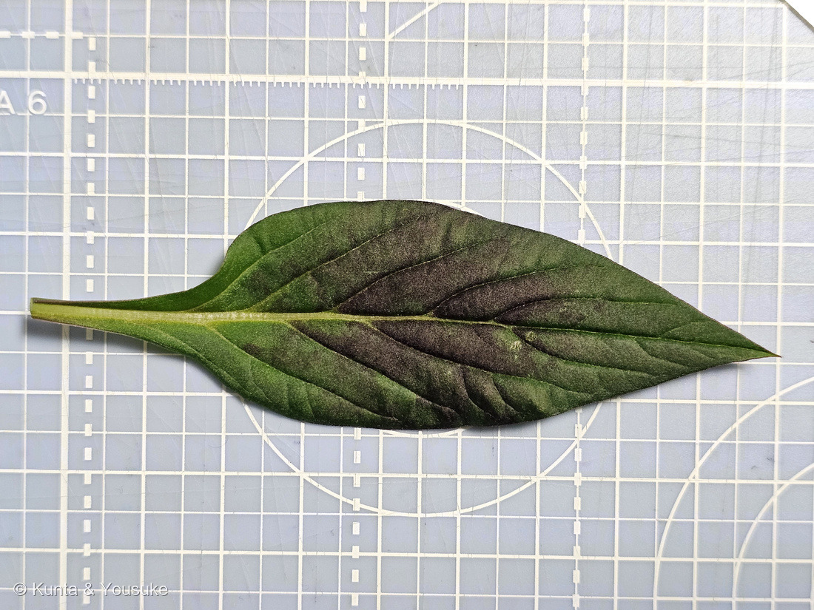
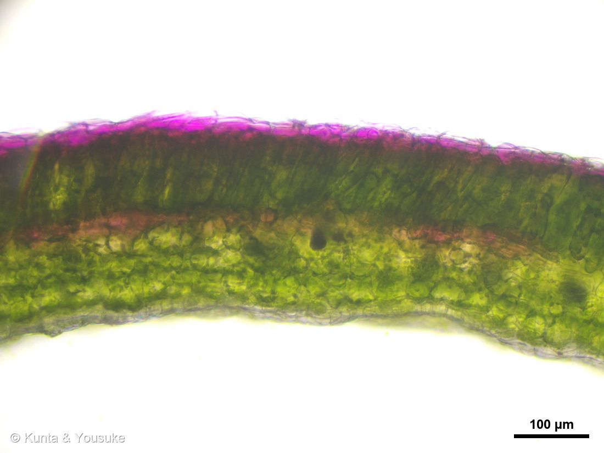
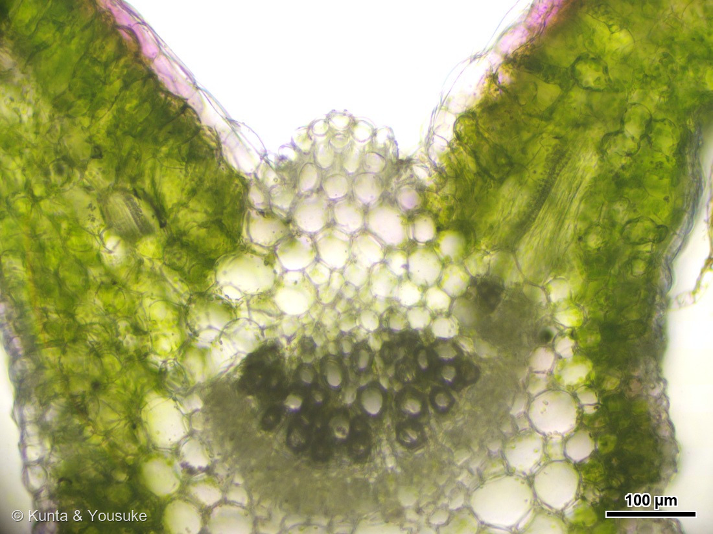
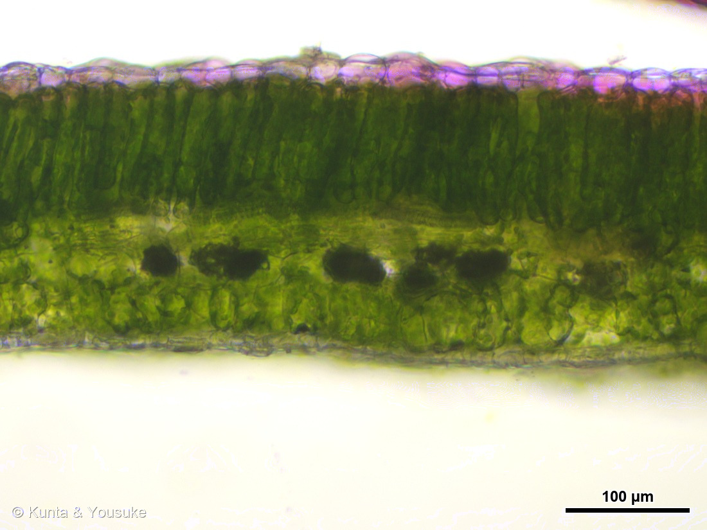
⭐ この節の写真だよ。ボタンで切り替えてね（番号は上のギャラリーからのつづき）。
⭐ まず、大きさと厚さ
- ⭐写真⑨のマットは1マス＝1センチ。──この葉は葉身がおよそ13〜15センチ、幅およそ6センチ（葉柄と茎まで入れるとおよそ19センチ）。⭐ケイトウの栽培品種の記載「葉身 5〜13 × 2〜6センチ」の、いちばん大きいほうだね。
- ⭐⭐⭐葉の厚さは272.5 ± 5.7 マイクロメートル（写真⑩で128か所を測った・260〜283の幅）。──⭐くらべると＝146 ミントが112／129 ヨモギが170／この子が272／143 シャリンバイが340マイクロメートル＝⭐草の葉としては、かなり厚いほうだよ。
⭐⭐⭐⭐ 赤は「表側の表皮だけ」にのっていた
- ⭐⭐⭐燻太さんの見立て＝「赤い色素は葉の表側に偏って分布しているみたい」。──⭐⭐断面（写真⑩）で、そのとおりだと確かめられた。
- ⭐⭐⭐あざやかな赤紫はいちばん上の表皮の列だけ＝厚さはおよそ24〜44マイクロメートル。──⭐その下は、色のついていない濃い緑の柵状組織。⭐⭐「柵状組織のある側が表」というのが、切片の上下を見わける決まりだから＝⚠赤紫がのっているのは、まちがいなく表（上）の側。
- ⭐⭐実物（写真⑨）を見ると、もっとはっきりする＝黒紫のまだらは葉脈と葉脈のあいだにだけ広がっていて、葉脈の上は緑のまま。──⭐だから、切る場所によっては、この赤紫が写らないこともあるんだ。
- ⚠⚠⚠⚠そして色素の名前はベタシアニン（アマランチン／セロシアニン）＝⚠アントシアニンではない。──⭐くわしくは、上の「燻太さんの3つの発見」の③を見てね。
- ⭐⭐写真⑪は主脈のところ。──左右の葉が谷のようにV字に立ち上がって、そのつけ根に大きな透明の細胞がぎっしり。⭐まんなかの暗いかたまりが維管束で、なかに丸い穴（導管）がいくつも並んでいるのが見えるよ。⭐いちばん下の、まん丸で縁が黒く光っている2つは水にまじった空気のあわ。
⭐⭐⭐⭐⭐ 燻太さんの質問 ── 海綿状組織の「暗い影」は、なんだろう
- 燻太さんの言葉＝「海綿状組織でたまに見られる、暗い影のようなものは何だろう？ かなり強めに光を当てたのにこの暗さだから、不透明に近い物質が凝縮したものなのかな？」（写真⑫）
- ⭐⭐⭐⭐⭐ぼくの見立ては「物質じゃなくて、空気」。──葉の細胞と細胞のあいだのすきま（細胞間隙）に、水が入りそこねて残った空気だと思う。
- ⭐⭐⭐理由①＝色が中立。──影のなかの色は、赤・緑・青がだいたいそろって暗い。⚠タンニンのような褐色の物質なら、赤が強く残るはず。⭐まわりの葉肉のように「青だけ吸われて緑にみえる」でもない＝⭐⭐色素の吸収ではなく、光そのものが来ていない。
- ⭐⭐⭐⭐⭐理由②＝ピントを変えると、暗さが変わる（これが決め手）。──同じ場所の同じ影を4枚でくらべたら、いちばん暗い値が38 → 38 → 64 → 79と大きく動いて、形まで変わり、ふちに明るい線が出たり消えたりした。⚠不透明な物質なら、ピントを変えても暗いままのはずだよ。
- ⭐⭐理由③＝影のふちに、虹色っぽい明るい点がある。──空気と水のさかいめで、光が曲げられた跡。
- ⭐⭐理由④＝切片によって、出たり出なかったりする。──いちばん暗い影は、2枚の切片のうち片方にしか無かった。⚠道管や特別な細胞なら、どの断面にも同じように出るはずだよね。
- ⭐⭐⭐⭐⭐そして「強く光を当てたのに暗い」が、いちばんの手がかりだった。──空気と細胞では屈折率がちがうから、そのさかいめで光が散らされて、レンズに入らない方向へ逃げてしまう。⭐⭐吸われているのではないから、明るくしても暗いままなんだ。⭐葉の切片を見るときに、水をしみこませてから見るのは、まさにこれを消すためだよ。
- ⏳⏳⭐⭐⭐⭐確かめかた（1分でできる宿題）＝カバーガラスの片ふちに水を1滴おいて、反対がわからろ紙で吸って、水を通してみる（水だけで入らなければ、台所洗剤をほんのちょっと混ぜた水か、50パーセントのエタノール→水の順で）。──⭐⭐影が消えて、そこに細胞が見えたら空気で確定。暗いまま残ったら、ぼくの負けで、ほんとうに物質だよ。⭐おまけの手＝コンデンサの絞りを絞る（屈折で暗いものはコントラストがぐっと上がるけれど、色素はほとんど変わらない）。
- ⭐⭐⭐⭐もし空気だったとしても、これは「はずれ」じゃないんだ。──海綿状組織のすきまは、葉っぱが息をするための空間そのもの。⭐⭐おなじ日に、花被片で気孔を見つけたよね＝⭐⭐⭐気孔から入った空気が行く先が、あの黒い影なんだ。
⭐⭐⭐ この植物のこと
- ⭐高さは30〜90cm、花期は8〜10月（三河）。⭐葉は互生し、卵状披針形。
- ⭐⭐小花のつくりは、とてもかんたん＝「雄しべ5個。雌しべ1個」＝小苞は花被片の半長（三河）。──⭐写真②で、羽毛のあいだにときどき見える丸い粒のかたまりが、その小花だよ。
- ⭐⭐⭐栽培品種は、形で3つのグループに分かれる（三河）。──⭐トサカ系＝「大きなとさか状の頭状花序（直径7.5〜30㎝）」／⭐⭐羽毛系＝「狭いピラミッド形の羽毛のような頭状花序（長さ10〜25㎝）」← うちの子はこれ／⭐ヤリ系＝「短い穂状花序で直立し、小麦の束に似ている」
- ⭐⭐同じ1つの種から、こんなに形のちがう3つが作られた。──⚠302 パイナップルで書いた「人が正反対の方向に選んだ結果」と、まったく同じことだね。
- ⭐日本へは奈良時代に中国を経由して渡来した。──⭐古名は「韓藍（からあい）」＝万葉集にも出てくる、古い名前だよ。
⭐⭐ 世話のこと（おうちの子だから）
- ⭐鉢植え。日なたが好き（⚠暗いと徒長して倒れやすい）。⭐水は土の表面が乾いたらたっぷり（⚠受け皿に水を溜めない）。
- ⭐⭐花がらは、下の腋生の花序（写真③のスタンバイ組）を残すように、上の咲き終わった穂だけ切る。──⭐そうすると、次がのびてくるよ。
- ⚠一年草なので、冬は越せない。──⭐⭐だから種を採っておこう。そうすれば、来年また会える。⭐ヒユ科の種は、黒くてつやつやの小さな粒だよ。
出典：三河の植物観察「ケイトウ Celosia argentea」（花被片は5個、長さ約5㎜、赤色、果時にも残る／薄膜質で宿存／花序は穂状花序、頂生または腋生／雄しべ5個。雌しべ1個／小苞は花被片の半長／葉は互生し、卵状披針形／高さ30〜90㎝／花期は8〜10月／栽培品種は形態により3グループ＝トサカ系「大きなとさか状の頭状花序（直径7.5〜30㎝）」・羽毛系「狭いピラミッド形の羽毛のような頭状花序（長さ10〜25㎝）」・ヤリ系「短い穂状花序で直立し、小麦の束に似ている」）／原産地と渡来については199 ケイトウのページの出典（熱帯アジアから熱帯アフリカにかけての原産と推定される／日本へは奈良時代に中国を経由して渡来／古名「韓藍」）と同じ。⚠香りについては、出典を見つけられなかった＝⭐ページ本文の「ぼくの見立て」は、出典ではなく推測だよ。⭐撮影時刻は、燻太さんの原本のEXIFから読んだよ（⚠公開画像はEXIFを落としてある）。
⭐顕微鏡の節の出典＝色素については Celosia argentea: Towards a Sustainable Betalain Source（アマランチン・イソアマランチン・セロシアニンⅠとⅡ）／Betalains in Some Species of the Amaranthaceae Family: A Review（ヒユ科のベタレイン）／ベタレインとアントシアニンが同居しないことは Evolutionary blocks to anthocyanin accumulation in betalain-pigmented Caryophyllales。花被片の脈は Flora of China 第5巻「AMARANTHACEAE」（tepals 1-, 3-, 5-, or 7(-23)-veined／Celosia argentea の花被片は 4〜10mm・scarious）。細胞間隙の空気が光を散らして暗く見えることは Stomatal Responses to Flooding of the Intercellular Air Spaces（屈折率の不連続で光が散乱される）。⭐大きさの数字は、ぼくが写真の上で測ったもの＝顕微鏡は較正ずみのスケール（対物10倍 0.2395 µm/px・対物40倍 0.0531 µm/px）、実物は1cm方眼から＝⚠出典ではなく実測だよ。⚠「暗い影＝空気」は、ぼくの見立て＝まだ確かめていない。